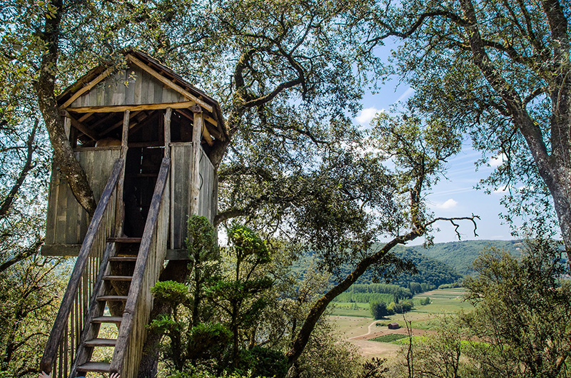

Treehouses
-Rustic treehouse
-Made from basic rough-sawn timber
-All come with roof and either stairs or ladder
-Under 5m2
-Built in medium-sized tree or on posts

-Fantasy treehouse
-Made from weather-proof materials
-Can include glazing and lockable doors
-Usually bigger than 10m2 (consent needed)
-Built in large sturdy tree
-Ideal for large wooded area

-Grown-up treehouse
-Similar to a ‘cabin in the trees’
-Can be lived in for part or all of a year
-Can include a fireplace and/or power
-Fully insulated and weathertight to current building standards
-Up to 50m2 (consent required)
-Often built between multiple large sturdy trees
-Best suited for large wooded areas
-Modern treehouse
-Made from dressed timber or marine ply
-Have skirting around doors and windows
-Can include balcony
-Built in medium-sized sturdy tree or on posts